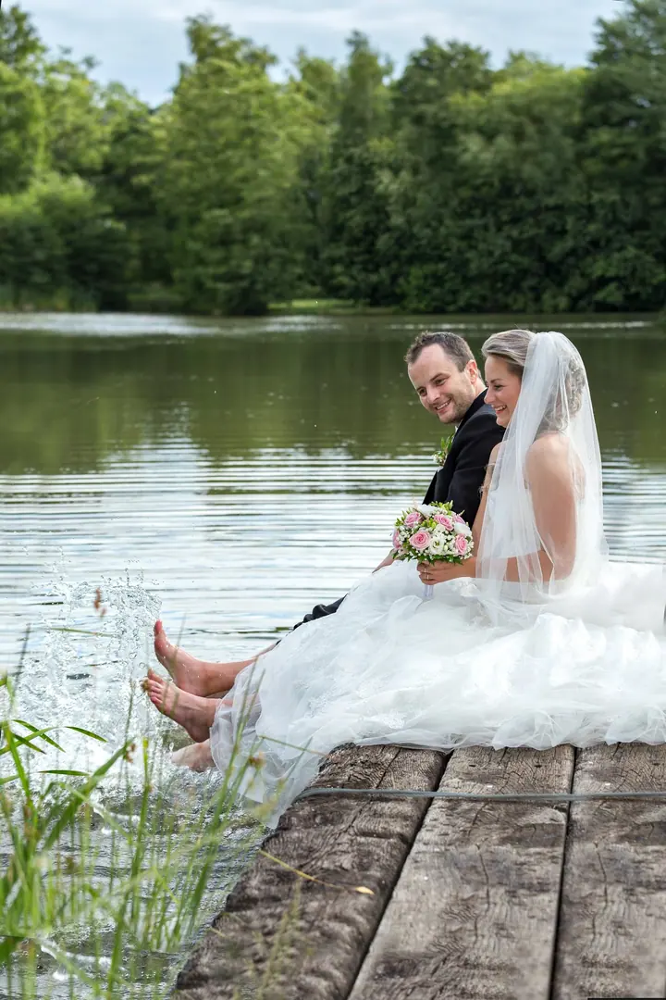
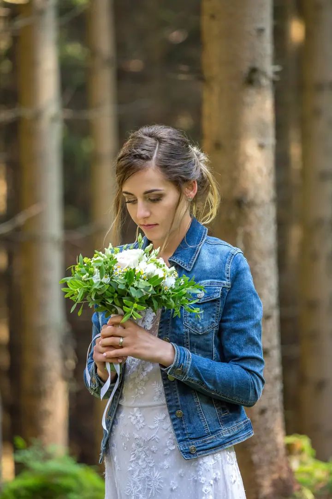
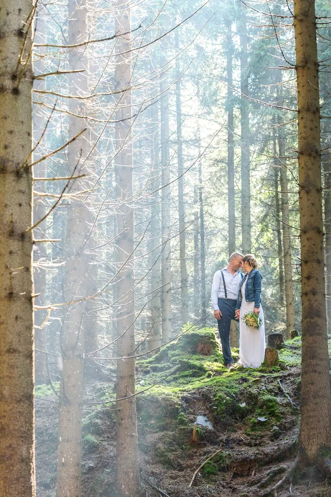
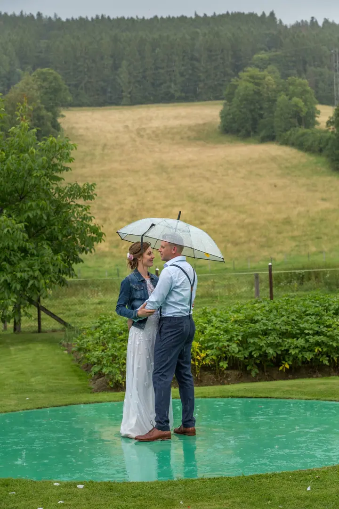
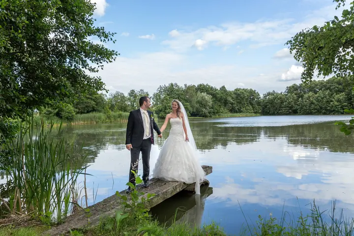
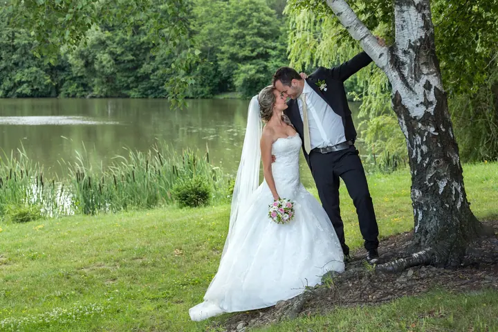

Svatba
Každá svatba má svůj příběh a emoce. Svatební den fotím přirozeně a nenuceně, aby vám zůstala řada vzpomínek, ke kterým se rádi vrátíte.





Jmenuji se Gabriela Kosíková a fotím svatby, rodiny s dětmi i úplně první dny miminek. Sídlím v Horním Benešově a ke každému přistupuji zcela individuálně.
Více o mně
„Fotografie jsou pro mě časovou stopou, kterou je třeba zaznamenat.“
— Gabriela Kosíková
Každá svatba má svůj příběh a emoce. Svatební den fotím přirozeně a nenuceně, aby vám zůstala řada vzpomínek, ke kterým se rádi vrátíte.
Láska a pohoda provází každé focení rodin s dětmi. Snažím se zachytit vaši rodinu tak, jak se vidíte vy sami.
Fotím přirozené, citové portréty prvních okamžiků života vašeho novorozeného miminka. Budete mít krásnou památku na první dny.
Jedinečné focení pro období plné očekávání. Zachyťte ho pro dobu, kdy už bude dávnou minulostí.
Fotografie jsou pro mě časovou stopou, kterou je třeba zaznamenat. Jsou chvíle, které se dějí ve zlomku vteřiny, jako mávnutí motýlích křídel, jedinečné a neopakovatelné. A právě ty se snažím zachytit, aby vám připomněly, že ta chvíle stála za to.
Jsem máma dvou úžasných holek a žena báječného manžela. Kromě rodiny ke svému životu potřebuji fotoaparát a stovky zachycených okamžiků. Ráda potkávám nové zajímavé lidi a jejich příběhy.
Fotografii se věnuji i mimo zakázky. Absolvovala jsem newborn workshop, kurz svatebního workflow, workshop ateliérového svícení a řadu krajinářských fotoexpedic, od Šumavy až po Norsko. Jinak nechávám mluvit hlavně své fotografie.
Napište mi přes formulář nebo zavolejte. Ráda si vyslechnu, co plánujete a jaký termín máte na mysli.
Ke každému přistupuji individuálně. Probereme vaše představy, místo i průběh focení, abych co nejvíce splnila vaše očekávání.
Fotím přirozeně a nenuceně. Nemusíte se bát pózování, stačí, když budete sami sebou.
Fotky pečlivě vyberu a upravím. Dostanete vzpomínky, ke kterým se budete rádi vracet.
Sídlím v Horním Benešově. Místo focení vybíráme spolu, často to bývá příroda kolem rybníků, louky nebo les.
Stačí mi napsat přes kontaktní formulář nebo zavolat na +420 777 765 094. Domluvíme se na termínu a podrobnostech.
Nejlepší je ozvat se mi už během těhotenství. Newborn fotky se fotí v prvních dnech života miminka, a tak je dobré mít termín domluvený dopředu.
Ano. Ráda zachytím atmosféru vašeho podniku, „chuť“ vašich produktů nebo vás samotné. Fotila jsem například pro Restauraci Zastávka Úvalno.